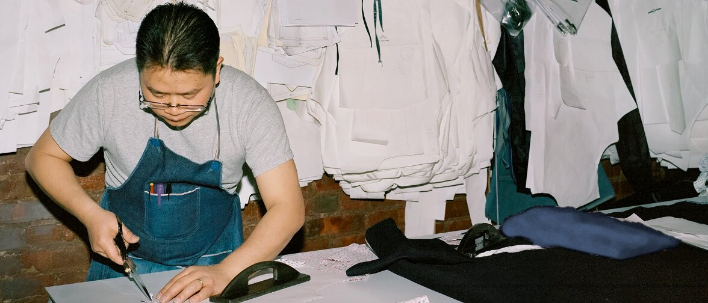
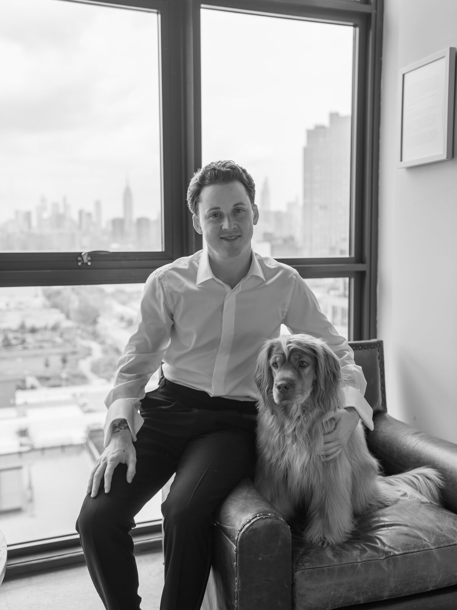
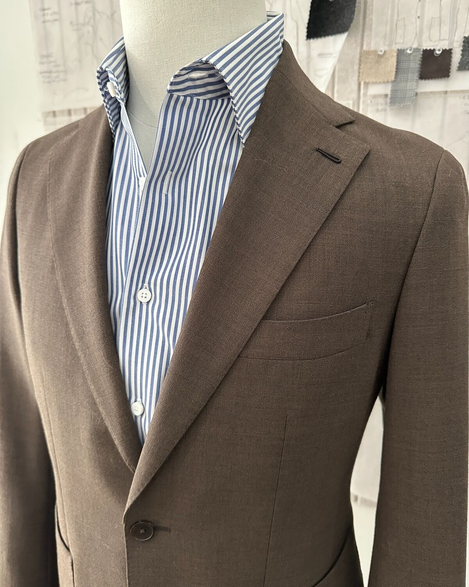
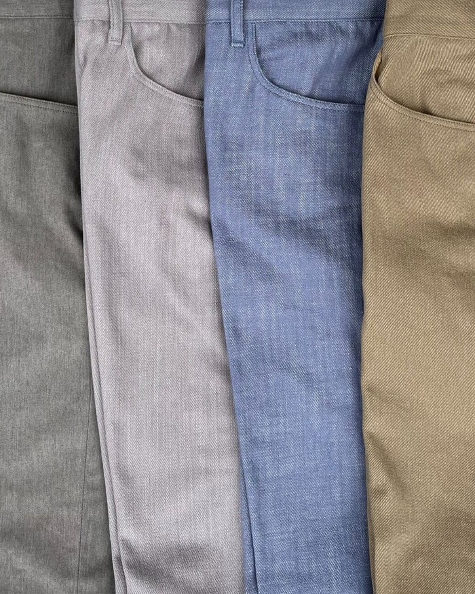
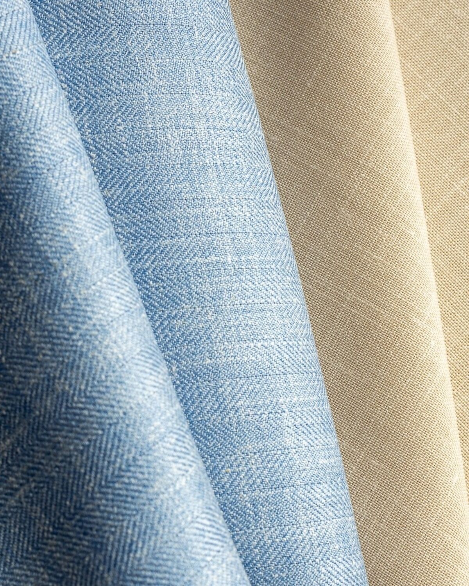
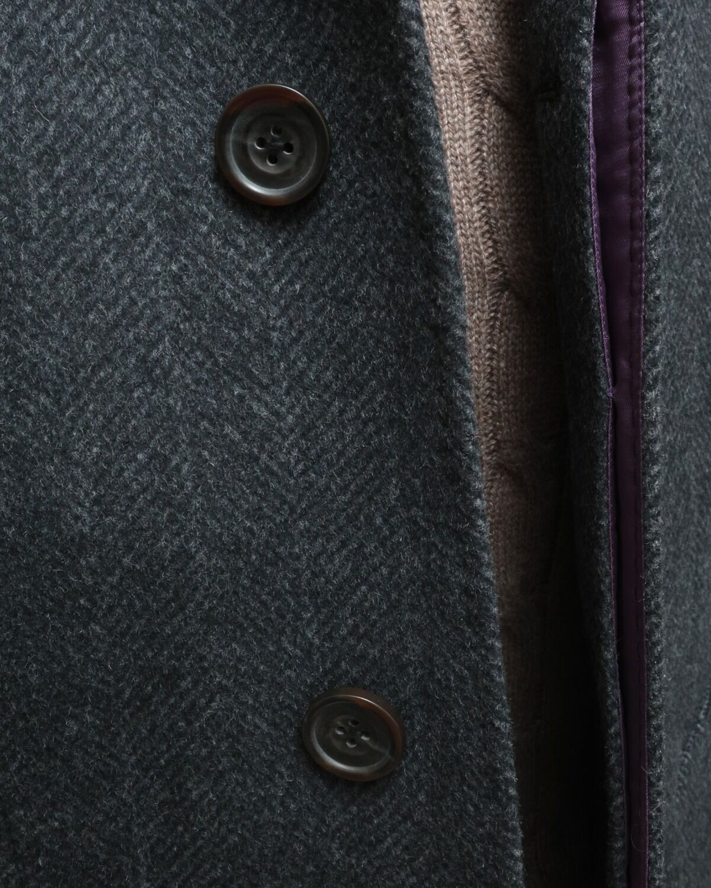

P.GÓRNE is a New York atelier for made-to-measure menswear, founded by Patrick Gorny in 2019. Tailoring, denim, knitwear, and outerwear are brought together under one roof, each garment cut from your own pattern, in cloth from the world’s great mills, and made by a specialist in its discipline.


The Founder
Patrick Gorny began in custom suiting, where he trained and managed more than thirty specialists and built lasting relationships with clients, cloth mills, and workrooms. He went on to a bespoke denim house in New York, where every pair was cut and sewn in an on-site atelier.
P.GÓRNE joins the two: the sophistication of soft tailoring and the precision of a personal denim pattern, offered with a breadth of garments and cloth rarely found in one place.
Proportion

Made to Measure goes beyond the measuring tape. We consider how you like a garment to feel and where it will be worn, then build in the allowances that let it drape properly. Jackets are cut with a soft shoulder and a high armhole for comfort and movement.
Craftsmanship

Our five-pocket trousers are cut and sewn in New York by a single maker, fitted through the waist, hips, and rise, where every body differs and ready-to-wear cannot follow. Tailoring, knitwear, and outerwear are entrusted to specialists in each discipline, at home and abroad.
Cloth

Loro Piana, Holland & Sherry, Dormeuil, Scabal, Liberty London, Albini, Alumo, Candiani, and more. Natural fibers with character and drape: denim of every kind, twills in over one hundred colors, corduroy, linen, and cashmere.
Longevity

Perfection takes time. Fittings, alterations, and repairs are part of the process; we refine each garment with you until your one-of-one pattern is set, and it is kept as the foundation for everything that follows.
The Offering
Tailoring
Jackets, suiting, and formalwear with a soft shoulder and natural drape.
Trousers & Denim
Made-to-measure five-pocket trousers in denim, twill, corduroy, linen, and cashmere.
Knitwear
Silk-cashmere shirts and polos, cashmere sweaters and cardigans.
Outerwear
Wool and cashmere overcoats, and rainproof casual jackets.